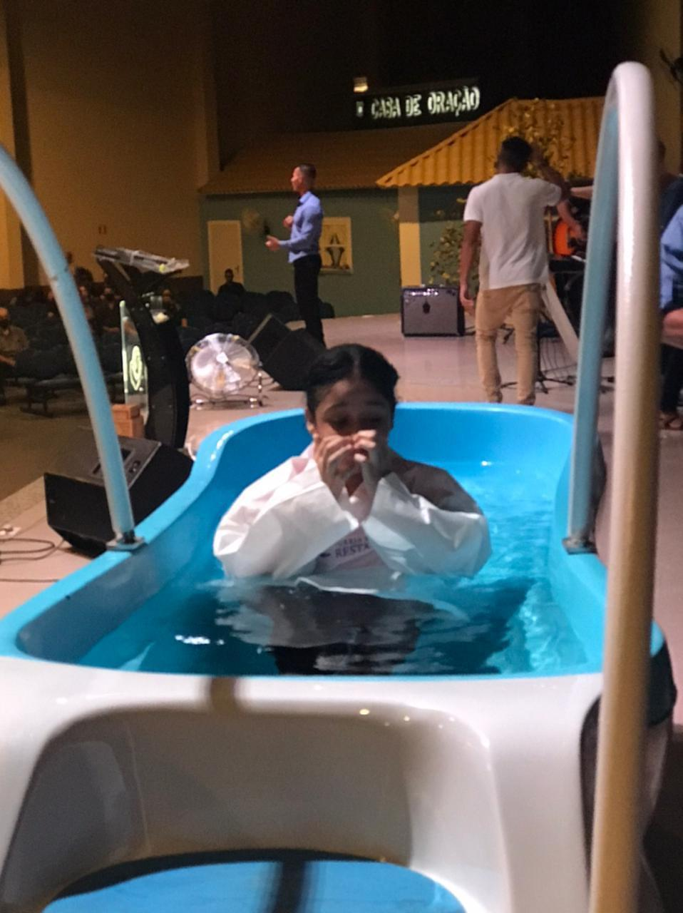

<!DOCTYPE html>
<html lang="pt-BR">
<head>
    <meta charset="UTF-8">
    <meta name="viewport" content="width=device-width, initial-scale=1.0">
    <title>Sobre Mim | O Homem-Deus</title>
    
    <link rel="stylesheet" href="style.css">

</head>
<body>

</body>
</html>
<header class="cabecalho">
        <div class="container cabecalho-conteudo">

           
            <a href="#inicio" class="logo">
                <span class="logo-icone">†</span>
                O HOMEM-DEUS
            </a>

            <button class="botao-menu" id="botaoMenu" onclick="abrirFecharMenu()" aria-label="Abrir menu">☰</button>

           
            <nav class="menu" id="menu">
                <a href="#inicio" onclick="fecharMenu()">Início</a>
                <a href="#humanidade" onclick="fecharMenu()">Humanidade</a>
                <a href="#evangelhos" onclick="fecharMenu()">Evangelhos</a>
                <a href="#ditados" onclick="fecharMenu()">Ditados</a>
                <a href="#quiz" onclick="fecharMenu()">Quiz</a>


                <a href="sobre.html">Sobre Mim</a>

                <!-- Esta área muda pelo JavaScript: mostra "Entrar" ou "Olá, nome | Sair" -->
                <div class="area-usuario" id="areaUsuario">
                    <a href="login.html" class="menu-entrar">Entrar</a>
                </div>
            </nav>
        </div>
    </header>

    <main>
        <section class="abertura">
    <h1>Sobre Mim</h1>
    <p>Por trás de O Homem-Deus existe uma história. Esta é a minha.</p>
</section>
        <section class="secao-historia secao-escura">
        <span class="idade">Até os 11 anos</span>
        <h2>Eu cresci ouvindo sobre Deus</h2>
        <p>Eu cresci em um lar evangélico. Desde pequena, Deus fazia parte da rotina da minha casa: estava nas conversas, nos cultos, nas orações dos meus pais.</p>
        <p>Eu ia à igreja, mas nem gostava de ir. Ia só porque era "obrigada". A verdade é que, até os 11 anos, eu não entendia quem Deus era. Eu sabia repetir aquilo em que dizia acreditar, mas não sabia explicar por que acreditava.</p>
    </section>

        
    <section class="secao-historia secao-escura">
        <h2>O elefante na sala</h2>
        <p>Eu sempre fui comunicativa. Conversava com todo mundo e tinha muitos amigos. Quem me via de fora provavelmente achava que estava tudo bem.</p>
        <p>Mesmo assim, eu me sentia como o elefante na sala: presente, mas deslocada. Eu não me sentia pertencente a lugar nenhum. Carregava um vazio que não sabia explicar, nem para os outros nem para mim mesma.</p>
    </section>

   
    <section class="secao-historia secao-escura">
        <h2>Por que eu existo?</h2>
        <p>Eu me perguntava o tempo todo qual era o sentido da vida, por que eu existia e qual era o propósito da minha existência.</p>
        <p>Chegou um momento em que eu me cansei de viver sem rumo e decidi procurar respostas no lugar onde meus pais sempre disseram que elas estavam: na Bíblia.</p>
    </section>

    <section class="secao-historia secao-escura">
        <span class="idade">12 anos</span>
        <h2>Conhecendo o Deus dos meus pais</h2>
        <p>Aos 12 anos, convidei minha melhor amiga para ler a Bíblia comigo. Eu queria conhecer melhor o Deus dos meus pais, não só ouvir falar dEle, mas conhecê-Lo por mim mesma.</p>
    </section>

        
    <section class="secao-historia secao-transicao">
        <span class="idade">13 anos</span>
        <h2>A luz que resplandece nas trevas</h2>
        <p>Aos 13 anos, lendo o Evangelho de João, eu tive o meu encontro com Jesus. Em João 1 eu encontrei a passagem que mudou a forma como eu enxergava tudo:</p>

        <blockquote class="versiculo-destaque">
            <p>"Todas as coisas foram feitas por ele, e sem ele nada do que foi feito se fez. Nele estava a vida, e a vida era a luz dos homens. E a luz resplandece nas trevas, e as trevas não a compreenderam."</p>
            <cite>João 1:3-5 (ARC)</cite>
        </blockquote>

        <figure class="foto-historia">
            
            <figcaption>O capítulo que mudou a minha história.</figcaption>
        </figure>

        <p>Naquele momento, eu senti que finalmente tinha encontrado a resposta que tanto procurava.</p>
                
        <p>No mesmo ano, aos 13, eu fui batizada.</p>

        <figure class="foto-historia">
            
            <figcaption>O dia do meu batismo, aos 13 anos.</figcaption>
        </figure>
    </section>

       
    <section class="secao-historia secao-clara">
        <h2>Ele entende, porque Ele viveu</h2>
        <p>O Homem-Deus não nasceu só para explicar quem Jesus é. Nasceu para mostrar que Ele está perto de nós. Ninguém poderia nos compreender melhor do que Ele, porque Jesus também viveu a experiência de ser humano. Ele sentiu dor, enfrentou dificuldades e conheceu as nossas limitações.</p>
        <p>A menina que se sentia deslocada e se perguntava por que existia encontrou em Jesus a resposta e alguém que entende. É isso que eu quero que você, que está lendo, também saiba:</p>

        <p class="frase-final">Deus entende a sua dor.</p>

        <blockquote class="versiculo-destaque">
            <p>"Porque não temos um sumo sacerdote que não possa compadecer-se das nossas fraquezas; porém um que, como nós, em tudo foi tentado, mas sem pecado."</p>
            <cite>Hebreus 4:15 (ARC)</cite>
        </blockquote>

        <div class="botoes-final">
            <a href="index.html" class="botao">Conheça O Homem-Deus</a>
            <a href="quiz.html" class="botao">Faça o quiz</a>
        </div>
    </section>
    </main>